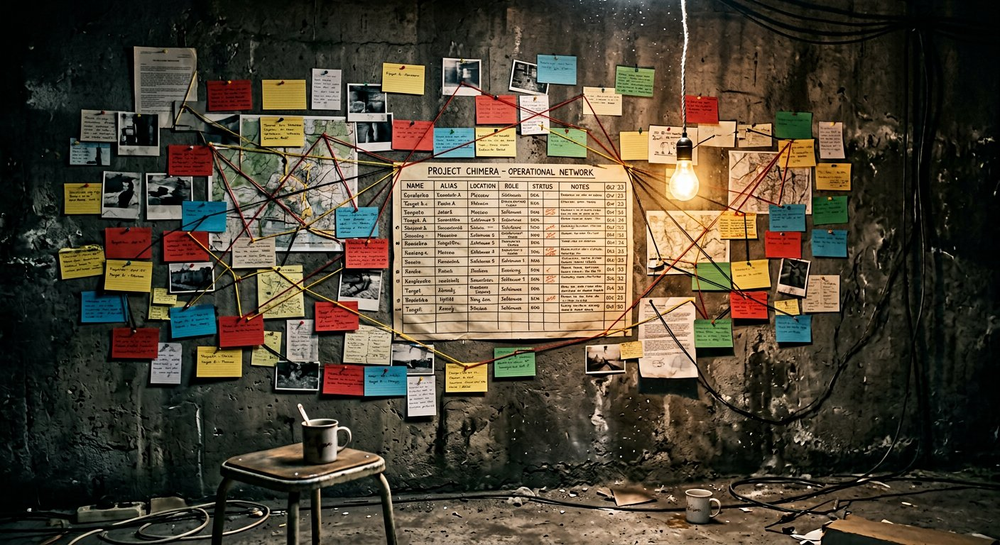
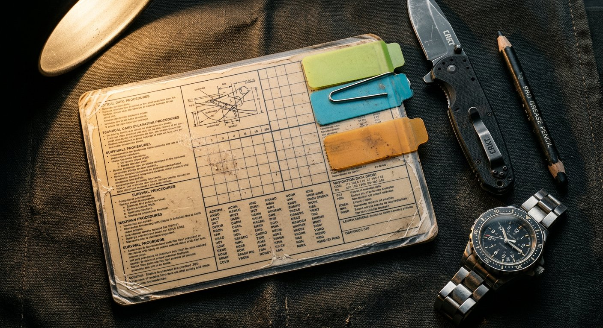

32 · Mémo
La page qu’on garde ouverte
Trente et une pages de manuel, ramenées à ce qui se retient vraiment. Les règles qui décident d’un raid, les chiffres qui reviennent, les dates qui se referment. Le reste est utile, mais ceci suffit souvent.
SynthèseVérifié le 16 nov. 2026Deux échéances ce mois-ci

Fiche unique · Aurora / S12
Cinq règles, et rien d’autre
- La munition avant l’arme. Deux niveaux de pénétration au-dessus de l’armure changent un duel ; un canon ne le change pas.
- La sortie avant le sac. Si tu ne sais pas par où tu repars, ton itinéraire de fouille est mauvais, même si le butin est bon.
- La valeur par case, jamais la valeur affichée. Un objet à un million sur neuf cases rapporte moins qu’une montre à deux cent mille sur une case.
- Le kit se paie en raids, pas en Tekniq. Un kit à soixante-dix mille qui tient un plan rapporte plus qu’un kit à cinq cent mille qui t’oblige à jouer prudent.
- Tout ce qui est temporaire expire plus tôt que la fin de saison. Le journal de missions se vide, les jetons d’événement aussi.
Le tableau à connaître par cœur
+2 niveaux100 %Dégâts complets
+1 niveau75 %Environ
Même niveau50 %Environ
−1 niveau25 %Environ
−2 niveaux0 %Aucun dégât direct
Plancher utileBleuCouvre jusqu’au grade 4
Grade 6BloqueTout ce qui est en dessous
Répartition réelle1·3·11·16·16·10·7Du niveau 7 au niveau 1
Le butin, en trois chiffres
- 12,7 M — Cœur d’Afrique, une case, le sommet du classement.
- 1,1 M / case — ventilateur médical : gros total, neuf cases, donc loin du sommet.
- 8 000 — seuil communautaire par case en dessous duquel un objet n’occupe pas la place.
Le réflexe : diviser avant de ramasser, pas après.
Les réglages qui changent une main
- Sensibilité fixe, jamais accélérée : même geste, même rotation.
- Son spatial en fixe et un seul traitement actif, jeu ou Windows, pas les deux.
- Champ de vision 105–110, images stables avant qualité graphique.
- Flou de mouvement et profondeur de champ coupés.
Le reste est du confort, pas de la performance.
Les dates qui se referment
17 nov.Accessoires HaavkFin de la fenêtre d’obtention
19 nov.Zenith Port et boutique TekniqFin des récompenses de la bataille et de la boutique d’alliage
26 nov.Cluster BrakkeshBadge, jetons, arsenal : tout s’arrête
10 déc.Brakkesh Renewed et collaborationFin des promotions de carte et des cosmétiques
18 déc.AZ3 SupercriticalOuverture : niveau 30, 600 000 Tekniq de matériel
25 janv.Fin de saisonPasse, défis, boutique saisonnière
Neuf erreurs qui coûtent un kit
Charger des balles sous-calibréesContre une plaque correcte, tu vides un chargeur sans résultat et tu révèles ta position.
Remplir le sac avant de choisir la sortieLe poids décide de la vitesse, la vitesse décide du duel, et la sortie décide du reste.
Empiler les jetons d’événementIls expirent avec l’événement, pas avec la saison.
Prendre une armure chère et des balles bon marchéL’inverse marche mieux, et coûte moins.
Fouiller un point chaud au début du raidLes trois premières minutes sont les plus disputées, pas les plus rentables pour tout le monde.
Arriver à la sortie au milieu du traficTrès tôt ou dans les dix dernières secondes, avec des fumigènes.
Confondre badge de faction et monnaieL’un monte en niveau, l’autre se dépense. Ils ne se convertissent pas.
Attendre la fin de saison pour les missionsLe journal se vide au changement de saison, sans report.
Croire un classement sans dateUn classement dépend d’un mode, d’une date et d’une taille d’équipe.
La boucle d’un raid, en six temps
1KitCe que tu acceptes de perdre
2EntréePoint de départ et premier itinéraire
3FouilleDiviser par la place, décider vite
4ContactÉcouter, engager ou contourner
5SortieLe bon point, au bon moment
6BilanCe que le raid a réellement rapporté
Le mémo, à écouter
Les cinq règles du mémo
MP3 français · munition avant l’arme, sortie avant le sac, valeur par case, kit payé en raids, tout ce qui est temporaire expire tôt.
Les erreurs qui coûtent un kit
MP3 français · balles sous-calibrées, sac rempli avant la sortie, jetons empilés, armure chère et balles bon marché.

Le mémo s’arrête là, le manuel continue.Chaque règle ci-dessus a sa page, avec les chiffres, les sources et les cas particuliers.